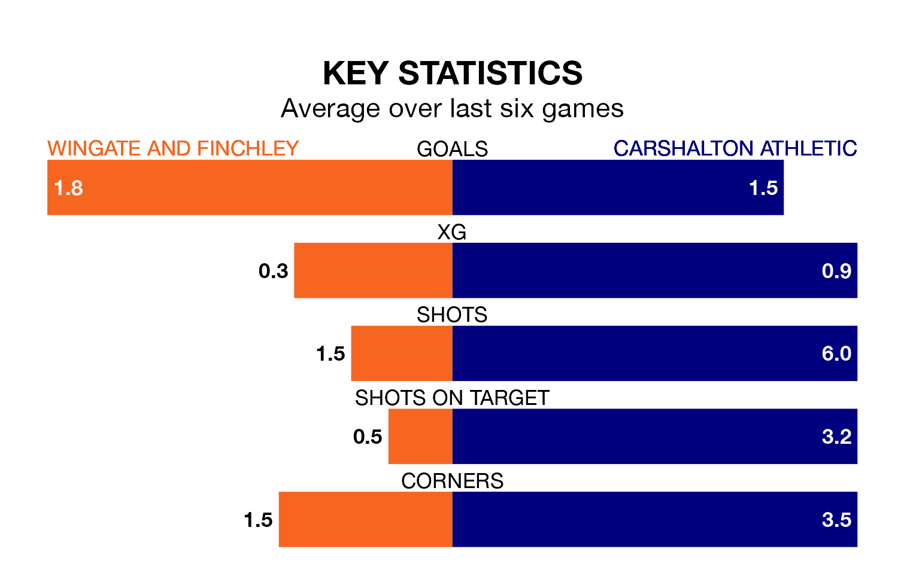

Wingate and Finchley host Carshalton Athletic in Saturday's match at the Harry Abrahams Stadium looking to bounce back from defeat last time out in the Isthmian Premier Division.
The Blues, who sit fourth in the league after 39 games, fell to a 2-1 away defeat to Margate on April 20.
They face a Carshalton side who also lost their last match, a 2-1 defeat to Billericay Town, and who sit seventh in the table.
With 71 goals in 39 games so far this season, Wingate & Finchley are scoring more than average in the league with 1.8 goals per game. And they are conceding fewer than average, letting in 58 goals at a rate of 1.5 per game.
Carshalton are also above average scorers, with 1.8 goals per game, compared to a league average of 1.6. They have conceded 1.4 goals per game.
In the last 10 years, Wingate & Finchley and Carshalton have played each other on nine occasions. Wingate & Finchley won three of them, Carshalton five, and they drew once.
On average, the Blues scored 1.4 goals and Carshalton 2.0 in those matches.
Their last meeting was on November 25, when Wingate & Finchley won 3-2 away.
The Blues are in fantastic form in the Isthmian Premier Division, with five wins and one loss from their last six games.
With two wins and a draw over that period, Athletic's form is much worse – they have taken seven points from 18, compared to the home side's 15.
Updated: 07:59 (UTC), 26/04/24